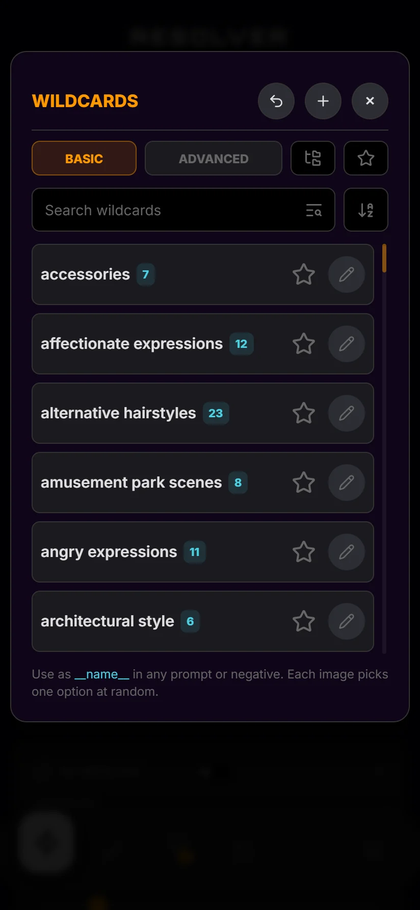
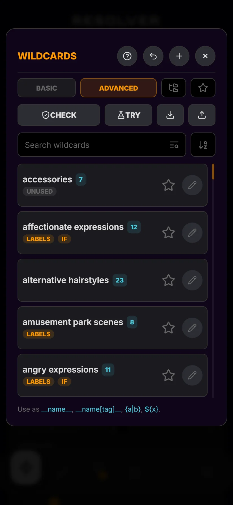
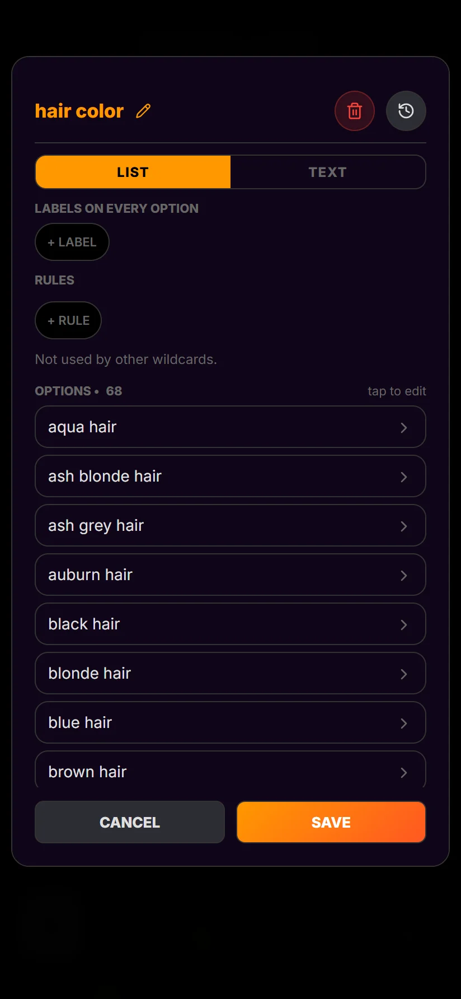
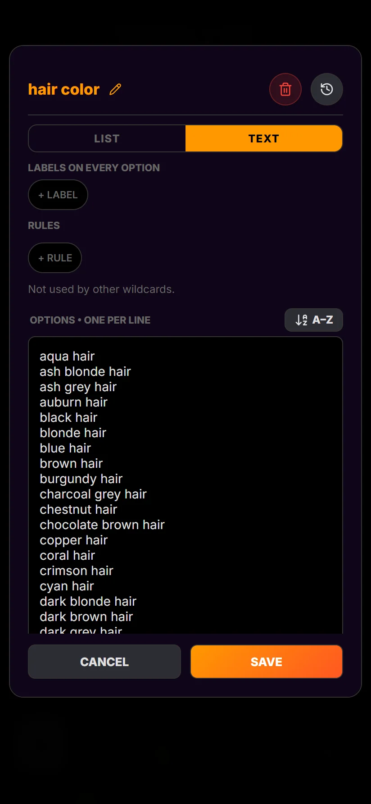
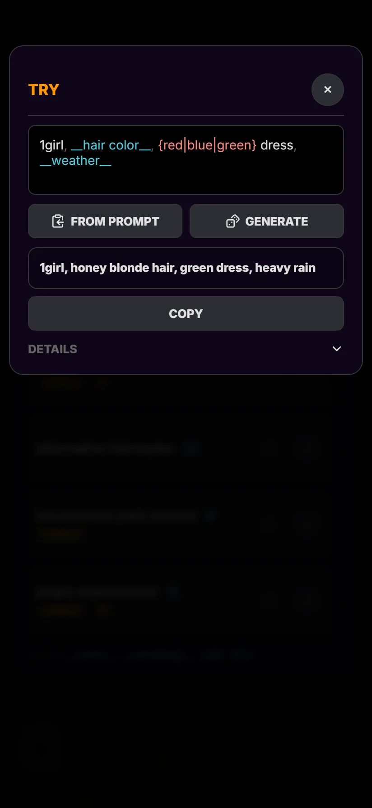
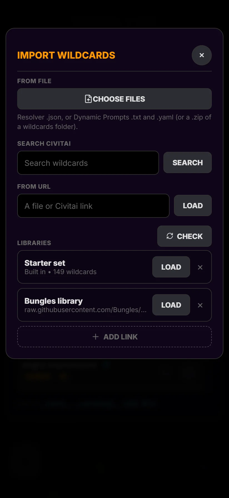

Docs / Create
Wildcards
A wildcard is a list of options with a name. Write in a prompt, and each image picks one of them, so a batch gives you variety without editing the prompt.
How they work
- Write its name between double underscoresAnywhere in a prompt or negative:
1girl, __hair color__, __casual outfits__. A name with spaces works as typed (__hair color__is the same as__hair_color__). - GenerateEach image picks its own options. With Batch Count 4 you get four different combinations.
- See what was pickedThe picks are saved with each image: open it in the viewer and use Send → Wildcards to keep some and reroll the rest.
Resolver comes with about 150 wildcards from the Bungles SFW library: hair, outfits, expressions, poses, places, lighting, weather… uses them all: put it after your subject for a whole picture. Reset App Configuration puts them back if you change them.
Try it
These four small wildcards are editable. Pick an example or write your own prompt, then Generate: it runs the app’s own wildcard engine, so the picks follow the same rules as on your phone.
Syntax
Write these in a wildcard’s options (one per line) or straight into a prompt. They work in BASIC mode too. The app’s How To (the ? in the Wildcards window) has the same list.
| What | Write | Gives |
|---|---|---|
| Pick one of a few No wildcard needed. | blue dress | |
| Sometimes nothing | glasses half the time · a third | |
| Pick several Different ones; also {1-3$$…}. | hat, gloves | |
| More or less likely At the start of an option line only. | 3× as likely · half as likely | |
| Use the same pick again | then | picks once, shows nothing there; the same pick anywhere (prompt, negative, Hi-Res) |
| Label options Never sent to the image. | labels for that option · a line of labels: for every option | |
Only some options& and, | or, ! not. | library or cafe, never beach | |
| Only if… Something with that label is in the image, wherever it’s written. | only with a sitting pose · only without | |
| Never together A rule for the whole image. | never both · at most one · wet only with rain | |
| A theme for the whole image | a wildcard of named picks, labels and rules: everything else follows | |
| Random LoRA or style | a Character LoRA · one of your styles. More | |
| Notes | a line starting with # is never picked |
Places are labeled, the pose labels what it is, and the mood follows the pose, in any order: places / , pose / , mood / , and the prompt . Try Only if… above.
The Wildcards window
Open it from Config → Prompts → Wildcards → MANAGE, or from the wildcard buttons on a prompt box.
- BASIC / ADVANCED
- Basic: the list and a plain editor. Advanced adds badges, TRY, CHECK, import / export, labels and rules. Basic keeps everything Advanced wrote.
- Group
- Wildcards sharing a first word (three or more) under one header; others by kind, then under “other”.
- Favorites
- Only your starred wildcards.
- Search · · Sort
- By name, or options, labels and rules too; sort A–Z, Recently added, Recently used, Most used.
- New · Recently deleted · How To
- A new wildcard; ones you deleted (kept 30 days); the syntax guide.
- Hold a row
- Selects wildcards to delete several at once.


Editing a wildcard
Tap a wildcard to open it. Tap its name at the top to rename it.
- LIST / TEXT
- LIST: each option a card (its text, how often, labels, “only if”) that opens to edit, and + OPTION. TEXT: all options as lines, with A–Z sorting. Both write the same lines.
- Labels on every option
- + LABEL: labels the whole wildcard (a
##line).
- Rules
- + RULE: builds a
#!rule (excludes, one of, requires…) step by step.
- EXAMPLE
- A sample pick from what’s in the editor; the dice gives another, a tap opens it in TRY.
- Used by
- Which other wildcards call this one.
- Magic Prompt
- TAGS or SCENES, an optional hint, then GENERATE: your local AI model writes options for you. picks its model. Magic Prompt.
- Pick: RANDOM / IN ORDER
- Random each image, or one after another, image by image.
- Versions ·
- Its last 10 saved versions, to bring one back; delete.


TRY and CHECK
TRY (Advanced) resolves a prompt without generating anything: type one or use FROM PROMPT, then GENERATE to see what each wildcard picked, and why.
CHECK looks through all your wildcards for problems: names that don’t exist, wildcards inside themselves (loops), and rules that clash. The number on it is how many it found.
A missing wildcard is left out of the prompt, and the Debug Log says why. TRY shows the same messages.

Rerolling an image’s picks
Liked an image but want another outfit? Open it in the viewer, tap Send → Wildcards: Wildcard picks lists each pick. Tap the ones to redraw; the rest are kept. REROLL puts its prompt in Generate with a strip under it: that tab’s next images keep the kept picks until you tap the strip’s ×.
Import and export
The button (Advanced) opens Import Wildcards:
- From file
- Resolver
.json, or Dynamic Prompts.txtand.yaml, or a.zipof a wildcards folder (password-protected ones ask for the password).
- Search Civitai
- Wildcard packs on Civitai, 20 a page: ALL or SFW ONLY, sorted by Relevance, Newest, Top Rated or Most Downloaded.
- From URL
- A file link or a Civitai link. Packs that need a login use your Config → Connection → Civitai API key.
- Libraries
- Saved links, such as the Bungles library. CHECK looks for updates, only when you tap it; nothing is fetched by itself. ADD LINK saves your own.
- The preview
- Before anything is saved: what’s new and what has the same name as yours: REPLACE, MERGE or KEEP MINE. Tick to import or skip; tap a name to see what’s inside.
- Uninstall
- Removes a library’s wildcards again; ones you changed or use are kept unless ticked.
Export () saves the wildcards you pick to a .json; the wildcards they use come too.
Names are cleaned and contents shown as text, never run.

Wildcard settings
- WildcardsConfig → Prompts · on
- Off:
__name__is sent as typed.
- Same seed, same picksoff
- A fixed seed repeats the same picks; a random seed (-1) still picks anew.
- No repeats in an imageon
- A wildcard used twice in one prompt gives two different options while it has them.
- Combinations per run · Queued jobs at most100 · 50
- Limits for All combinations, which makes every combination of the prompt’s choices. See Queue.
With Magic Prompt set up, Scene optimization (the wand beside PROMPT, SDXL and Anima) lets the AI model choose picks that suit each other. See Magic Prompt.